四年級上學期 · 第 3 課：規劃行程，從哪裡開始？
只說「去台南玩」範圍太大了！先決定從哪裡開始想：
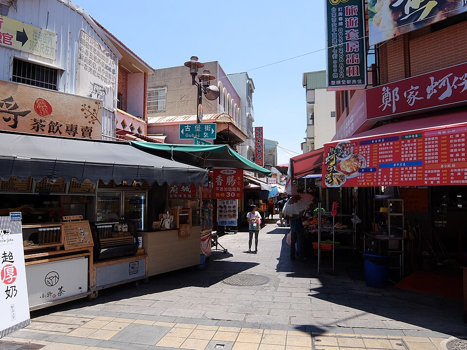
🗺️ 區域型旅遊
先選一個區域，就在裡面深度遊玩。
例：「安平區一日遊」——古堡、老街、小吃、海邊，都在附近，走路或騎車就到。
照片：Chongkian／Wikimedia Commons／CC BY-SA 4.0
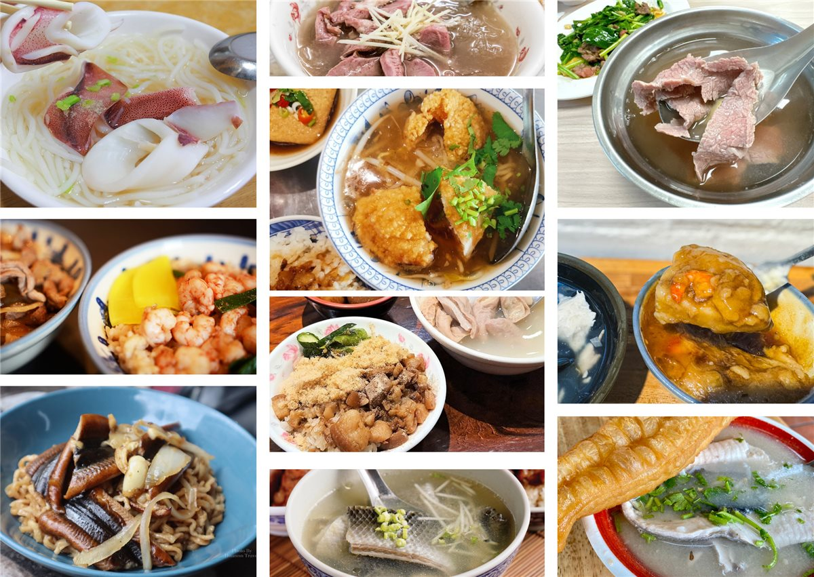
🏷️ 主題型旅遊
先選一個主題，再去找符合的景點。
主題像速食店的「套餐」。例：「美食探險」——擔仔麵、牛肉湯、碗粿、米糕……分散在台南好幾個區，要一區一區跑。
🎯 判斷看看：下面四句話，是「區域型」還是「主題型」？
選「主題型」的話，最常見的有這四種：
🌲 大自然與生態 「戶外踏青」型
山、海、森林、動植物。欣賞自然景觀、保護生態。
🏛️ 歷史文化與藝術 「說故事」型
古蹟、老街、博物館、美術館。欣賞歷史與文化。
🎡 主題樂園與休閒 「找快樂」型
遊樂設施、農場體驗、觀光工廠 DIY。互動、娛樂、親子同樂。
🛍️ 百貨商圈與夜市 「吃喝玩樂」型
逛街、購物、在地小吃。方便，體驗在地人的日常生活。
🔎 主題只有這四種嗎？還有更多！
四大主題只是常見的分法。台南旅遊網把景點分得更細，你在上一課看過的主題篩選就是這些：
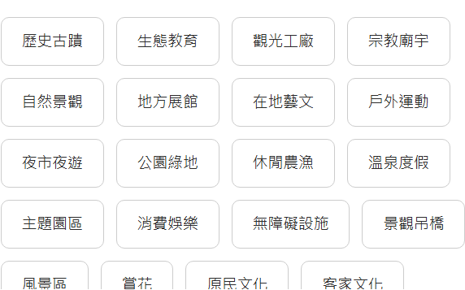
⭐ 加分：除了這些主題，你還想得到什麼旅遊主題？寫出主題名稱。
🎁 尚未完成這 8 個景點都是台南旅遊網上找得到的，把它們放進最適合的四大主題吧！
電腦：把卡片拖到主題格子裡。平板／手機：先點卡片，再點主題格子。放對才會留下來喔！
📍 還沒分類的景點
👀 發現時間：看看每張卡片上的「📍區域」標籤
(1)「赤崁樓」和「安平古堡」都是歷史古蹟，它們在同一區嗎？
(2) 標籤是「東區」的景點，出現了哪幾種主題？（可複選）
兩種規劃方式各有特色，一起來比一比：
| 比較 | 🗺️ 區域型 | 🏷️ 主題型 |
|---|---|---|
| 起點 | 先選「一個地方」 | 先選「一種好玩的事」 |
| 交通 | 景點集中，走路或短程移動就到 | 景點分散，常要跨區搭車 |
| 時間 | 路上花得少，每個景點可以多停留 | 路上花得多，停留時間會被壓縮 |
| 景點種類 | 種類多，吃喝玩樂都有 | 種類單一，但每個都符合主題 |
| 體驗 | 悠閒，可以走走停停 | 通常較匆忙，要趕著換地點 |
| 深度 | 對一個地方越逛越熟，看見在地生活 | 把同一種好玩的事看得特別透徹 |
| 適合 | 時間短、帶小朋友或長輩 | 有明確興趣、交通方便、時間充裕 |
💡 這些是「通常」的情況，不是絕對的。沒有哪一種比較好，要看你的時間、同行的人和想玩什麼來選！
除了自己查，政府也幫大家準備了旅遊資源。除了「區域型」「主題型」，還有第三種起點：🚌 交通型。
🚌 交通型旅遊：跟著「台灣好行」走
先選一條公車路線，沿著站點一路玩。台灣好行是交通部觀光署推動的觀光公車：把火車站、高鐵站和有名的景點連起來，不會開車也能出發。
✅ 專門開往景點，不用自己轉車找路
✅ 車上有語音報站，下車不怕坐過頭
✅ 可以刷悠遊卡、一卡通，也有一日票、二日票
✅ 兒童、長輩有優待票，部分班次有無障礙車
🗺️ 台南有這些台灣好行路線：
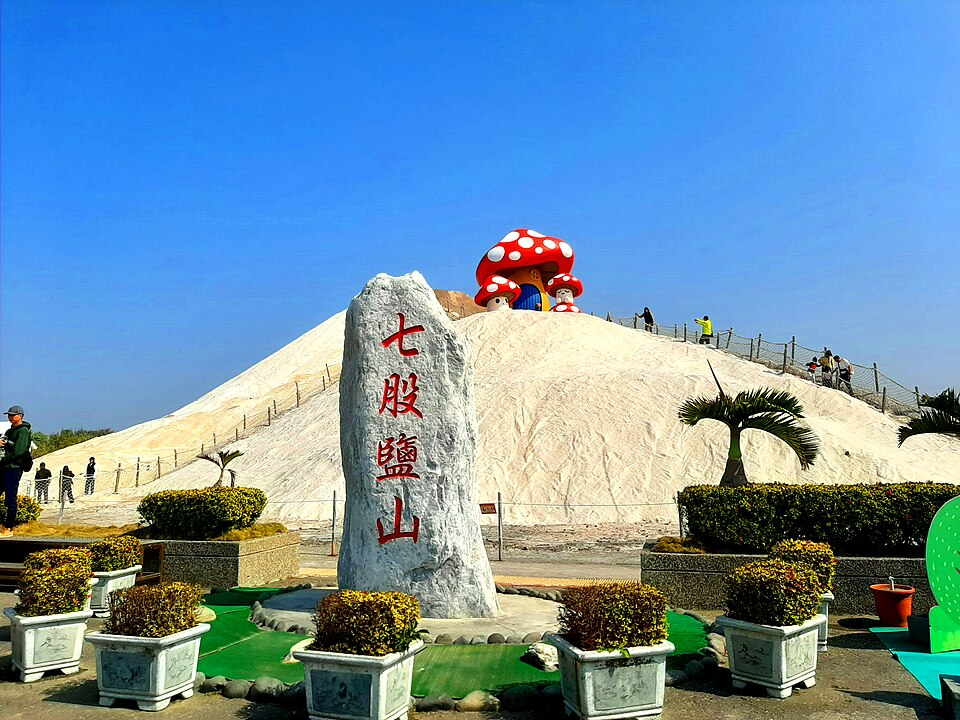
98 府城台江線
從台南轉運站出發，先逛府城市區，再一路開到安平、四草和七股。
赤崁樓・安平古堡・四草生態園區・台灣鹽博物館・七股鹽山
照片：月亮灣／Wikimedia Commons／CC BY-SA 4.0
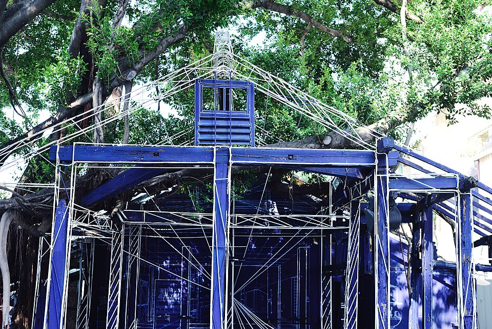
111 臺南小港機場線
國道客運，往返高雄小港機場和台南市區，是坐飛機來玩的旅客的好幫手。
藍晒圖文創園區・海安路藝術街・國華街及西市場・臺南孔廟・巴克禮紀念公園・奇美食品幸福工廠
照片：Sinchen.Lin／Wikimedia Commons／CC BY 2.0
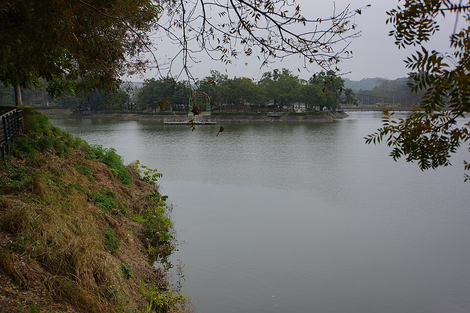
168 虎埤老街線
串起新市站、新化老街和虎頭埤，老街散步加湖邊散心。
新化老街・虎頭埤風景區・新化武德殿・大目降文化園區・中興大學新化林場
照片：lienyuan lee／Wikimedia Commons／CC BY 3.0
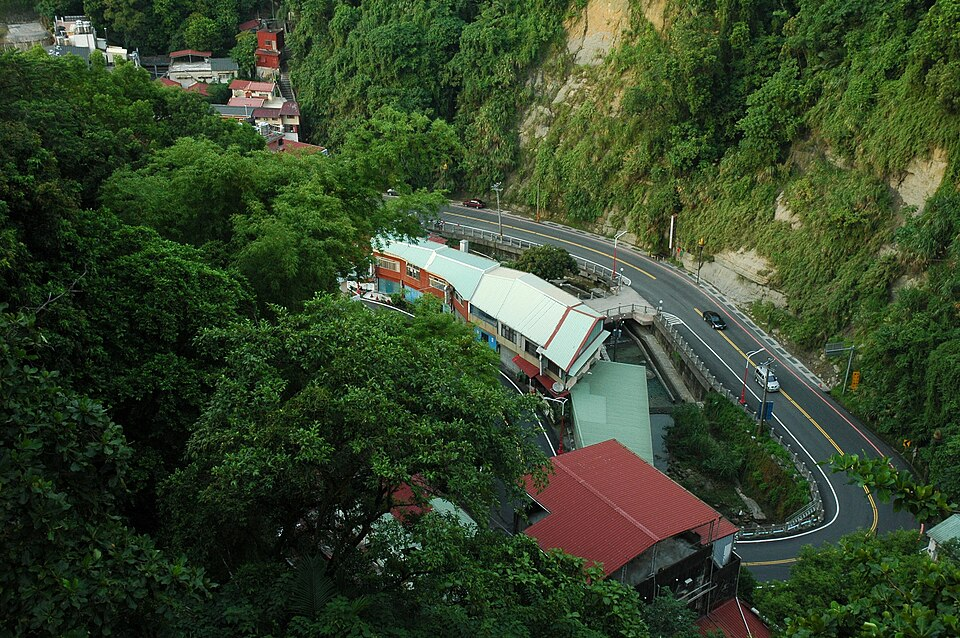
33 關子嶺線 假日行駛
從高鐵嘉義站出發，經白河、後壁，泡溫泉、看農村風光。
關子嶺溫泉・嶺頂公園・白河蓮花・無米樂社區・寶泉橋
照片：Jpatokal／Wikimedia Commons／CC BY-SA 4.0
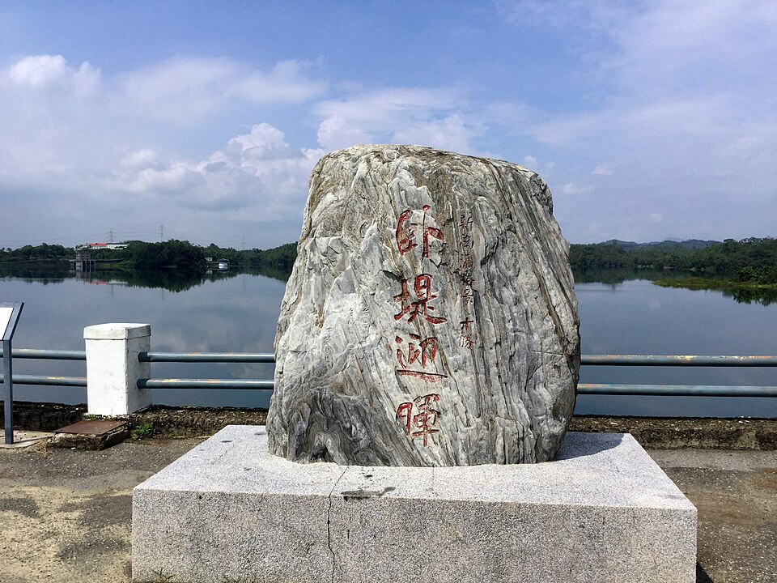
菱波官田線 假日行駛
從新營出發，經過柳營、官田、善化，湖光山色加親子踏青。
尖山埤渡假村・烏山頭水庫・官田遊客中心・隆田 chacha 文化資產教育園區・善化啤酒廠
照片：Tze Chiang Hao／Wikimedia Commons／CC BY-SA 4.0
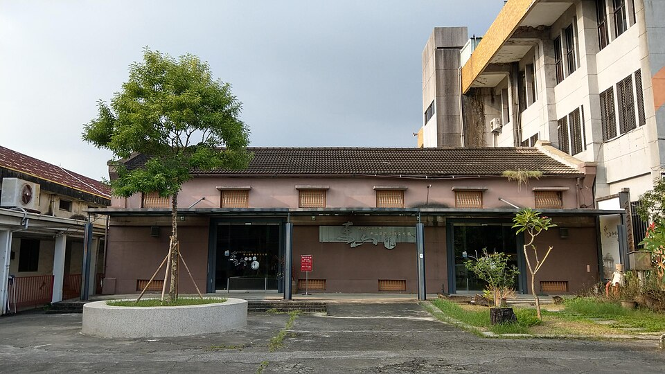
東山咖啡線
從關子嶺嶺頂公園出發，串起關子嶺風景區和東山咖啡公路，山麓慢慢逛。
嶺頂公園・關子嶺溫泉・東山咖啡公路
照片：Zu3612403／Wikimedia Commons／CC BY-SA 4.0
路線資料來源：台灣好行旅遊服務網（交通部觀光署）。哪天行駛、幾點發車，出發前要看官網最新公告。
🔗 台灣好行：看完整路線與時刻表 ↗同一種景點，帶同學去和帶爺爺奶奶去，感覺可能很不一樣。行程要看同行的人來調整。四種常見的景點類型：
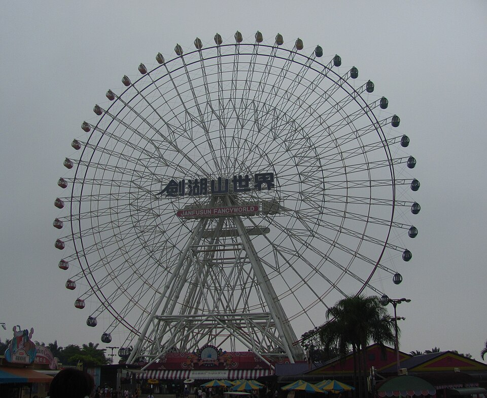
🎡 遊樂園
有摩天輪、雲霄飛車、旋轉木馬等遊樂設施，一整天玩不完。園區通常很大，要排隊，也要走很多路。
照片：Roller Coaster Philosophy, Jeremy Thompson／Wikimedia Commons／CC BY 2.0
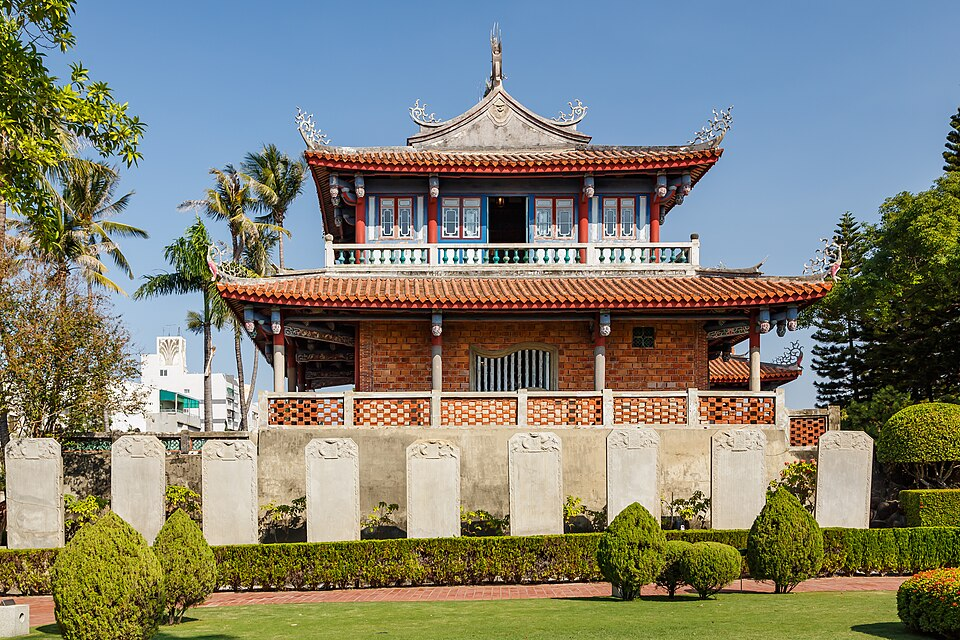
🏛️ 歷史古蹟
很久以前留下來的老建築或城牆，可以看老房子、聽歷史故事。通常有解說牌，常有階梯或石板路。
照片：CEphoto, Uwe Aranas／Wikimedia Commons／CC BY-SA 3.0
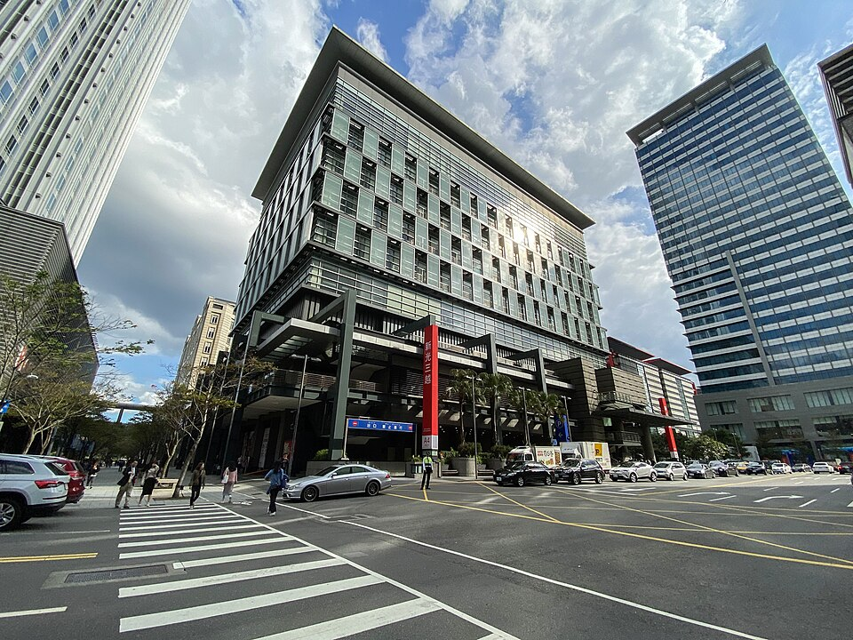
🛍️ 百貨公司
一棟大樓裡有很多商店、餐廳，還有遊戲區。有冷氣、電梯和廁所，不怕太陽，也不怕下雨。
照片：Wpcpey／Wikimedia Commons／CC BY 4.0
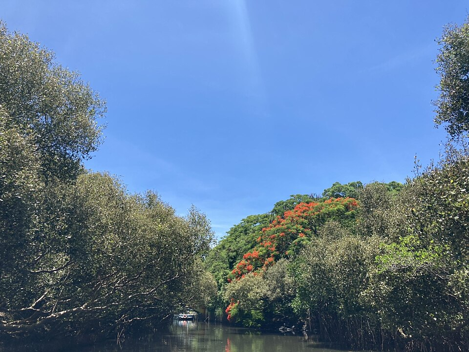
🌲 自然生態
山林、溼地、河流等大自然，可以看植物和動物、呼吸新鮮空氣。有些要走步道，有些要搭船。
照片：Wikipeeeder／Wikimedia Commons／CC BY-SA 4.0
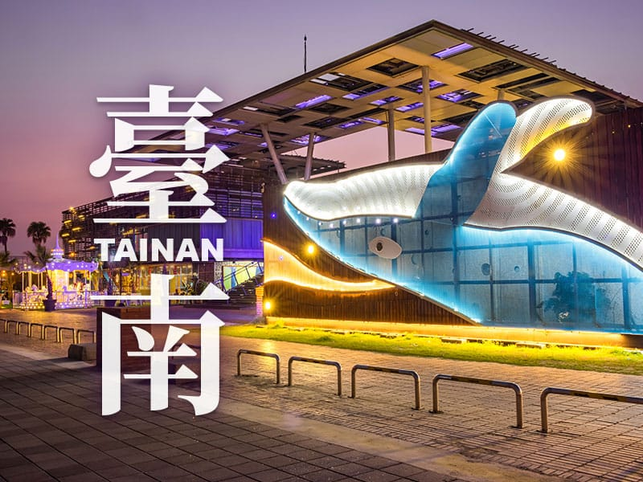
👀 來看看別人怎麼排
台南旅遊網的「遊程搜尋」有很多排好的行程。點進去看看：這個行程是先選地方（區域型），還是先選主題（主題型）？
遊程搜尋－台南旅遊網 ↗（用新視窗打開）
先想想你的旅遊類型：🗺️ 區域型？🏷️ 主題型？🚌 交通型？想好了，就把空格填滿！
🔗 本次學習單的網址
想再回來看，或貼到你的文件裡留著，就用這個網址。
我打算和…一起去
我想要以…來規劃景點
我選擇的區域／主題／交通路線是
因為
✅ 交出前自己檢查：
🎴 我的宣言
填好上面的空格，按「✨ 產生我的宣言」，宣言就會出現在這裡。以前寫過的，填好年級、班級、座號後按「📂 顯示我的宣言」就能拿回來。
宣言是行程規劃的第一步，把它放進 Google 文件，後面排行程才有依據！
複製宣言
在上一步按「✨ 產生我的宣言」，再按「📋 複製」，看到「✓ 已複製」就成功了。
打開你的行程規劃文件
到 Google Classroom 或雲端硬碟，點開你的「行程規劃」Google 文件。
貼上宣言
在文件第一行點一下，讓游標閃爍，然後貼上：
字的顏色或大小怪怪的，改按 Ctrl + Shift + V（純文字貼上）。
修改文件標題
文件左上角是文件的名字（可能寫著「無標題文件」）。
確定都填好了嗎？按下面按鈕交給老師（可以重交，會覆蓋前一次）。